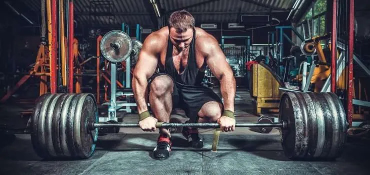

💥 Treino para Força (Baixo Número de Repetições)
Treino de força, é focado principalmente em desenvolver capacidade máxima de aplicar força durante o treino. Utiliza cargas pesadas com baixo número de repetições para estimular principalmente as fibras rapidamente.

Princípios Fundamentais
- ㅤEsta quantidade de séries permite um estímulo adequado para uma maior resposta hormonal e queima de calorias após o treino.
- ㅤEste periodo de tempo é nessesário para permitir a recuperação adequada entre os treinos feitos com cargas pesadas.
Volume:
ㅤ4-6 séries
ㅤ1-6 repetições por grupo muscular
ㅤ3 a 5 min de descanso
Frequência: 2-3x por semana
Nutrição para Força
- Proteína: 1,6-2,2g/kg
- Carboidratos: 4-7g/kg
- Creatina: 5g/dia
Técnicas Avançadas
- Execução correta do movimento
- Essencial para o desenvolvimento da força na cadeia posterior, costas e pernas.
- Focado na força da parte superior (peito, ombros e tríceps)..
- Elevação de peso acima da cabeça para ombros e estabilização.
- Elevação de peso acima da cabeça para ombros e estabilização.